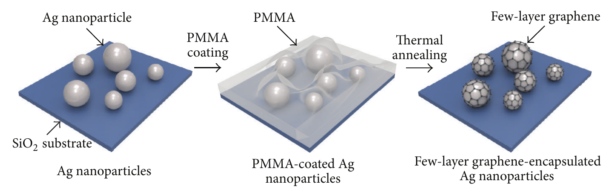

연구 배경과 분류
공개 본문에서 SERS 입자 보호층과 분석 측정 구조를 확인했다. 칩–연성 배선 접합은 다루지 않아 integration의 분석 부품 기초 자료로 유지한다.
경계 분류: 탐색을 위해 가장 가까운 주제를 배정했습니다. 분류 근거와 교차 연관을 함께 읽어야 하며, 주 테마만으로 연구 범위를 한정할 수 없습니다. 기초 연구의 분류는 직접적인 바이오전자 응용을 입증하지 않습니다.
연구 개요와 핵심 성과
Ag 나노입자 위에 PMMA 유래 수층 그래핀을 성장시켜 대기 열처리 후 산화와 R6G Raman 신호 변화를 평가했다.
고체 탄소원이 성장 중 입자 응집을 억제하고 얇은 보호층이 SERS 신호를 보존하도록 설계했다.

PMMA를 탄소원으로 사용하여 은 나노입자에 수층 그래핀을 형성하는 세 단계의 제조 도식입니다.
Jaehong Lee et al. (2015). “Highly Stable Surface‐Enhanced Raman Spectroscopy Substrates Using Few‐Layer Graphene on Silver Nanoparticles”. Figure 1. DOI: 10.1155/2015/975043. Creative Commons Attribution. 읽은 PDF에는 라이선스 버전이 명시되지 않았습니다. PDF를 300 dpi로 래스터화하여 그림 영역만 추출했습니다. 그림 내용은 변경하지 않았습니다.
원그림과 원문 설명 ↗ · DOI: 10.1155/2015/975043 ↗ · Creative Commons Attribution; version not specified in the read PDF ↗
남은 과제
편집 질문: 열 산화 내성이 실제 복합 시료와 장기 보관에서도 유지되는가?
비교 조건
입자 크기·피복층, 열처리 이력, 분석물 농도와 Raman 광학 조건을 맞춘다.
관련 외부 연구
Shell-isolated nanoparticle-enhanced Raman spectroscopy
외부 SHINERS 초록은 Au 입자의 실리카·알루미나 박막으로 응집과 시료 직접 접촉을 제한한다. #29의 그래핀 보호층과 보호·광학 접근의 균형을 비교한다.
Ag와 Au, 껍질 화학과 측정 형상이 달라 신호 개선 배율을 단순 비교하지 않는다.
초록 확인교신저자 확인
서정목 비교신 확인아래는 서정목의 교신저자 여부에 관한 확인 기록입니다. 저자 순서나 별표만으로 판정하지 않으며, 본문 내용 검증과 별도로 읽어야 합니다.
- 교신 고지 확인 출처 ↗
Correspondence should be addressed to Taeyoon Lee
PDF p.1; author/correspondence information · publisher_PDF_publicly_hosted_by_author_institution
- 본문 확인 범위
- 기존 해설은 등록 초록, 출판사 초록과 공개 본문의 도입·제조·SERS 측정 절을 읽었다. 이번의 그림·교신 항목 열람만으로 전체 심화 완료를 판정하지 않습니다.
- 남은 확인
- 학교 Chrome에서 보관·반복 측정 자료와 그림별 권리를 확인한다. 기존 해설은 등록 초록, 출판사 초록과 공개 본문의 도입·제조·SERS 측정 절을 읽었다. 이번의 그림·교신 항목 열람만으로 전체 심화 완료를 판정하지 않습니다.
COVERAGE & OUTREACH
보도와 소개
논문과의 연관성을 확인한 소개 자료입니다. 언론 게재는 독립 취재나 실험 결과의 추가 검증을 뜻하지 않습니다.
[Acceptance] “Highly Stable Surface-Enhanced Raman Spectroscopy Substrates using Few Layer Graphene on Silver Nanoparticles” ↗
논문 제목과 이재홍·신세라·강수빈·이상근·서정목과 Journal of Nanomaterials 표기를 대조했다.
본문 확인 개별 공개 공지의 날짜와 짧은 채택 안내 본문을 읽었다. 연구실 자체 공지이며 독립 취재로 집계하지 않는다.
근거와 확인 범위
등록 초록, 출판사 초록과 공개 본문의 도입·제조·SERS 측정 절을 읽었다.
- 원본 공개 논문 목록 ↗ · #29 · 2026-10-03
- Crossref metadata ↗: Crossref에 등록된 공개 서지 메타데이터만 확인했습니다. 출판사 페이지·초록·본문을 읽었다는 뜻이 아니며, 학교 Chrome 전문 검증은 보류입니다. license_urls는 등록된 링크 목록이며 본문·그림 재배포 허가를 의미하지 않습니다. TDM 또는 게시 정책 링크가 포함될 수 있습니다.
- Crossref — publisher-supplied abstract ↗
publisher_registered_abstract_via_Crossref · message.abstract; actually read 2026-10-03; publisher full text not implied - Journal of Nanomaterials — original article ↗
public_full_text_selected_sections · Abstract; Introduction; §2.2 graphene growth; §2.3 SERS measurements; checked 2026-10-03